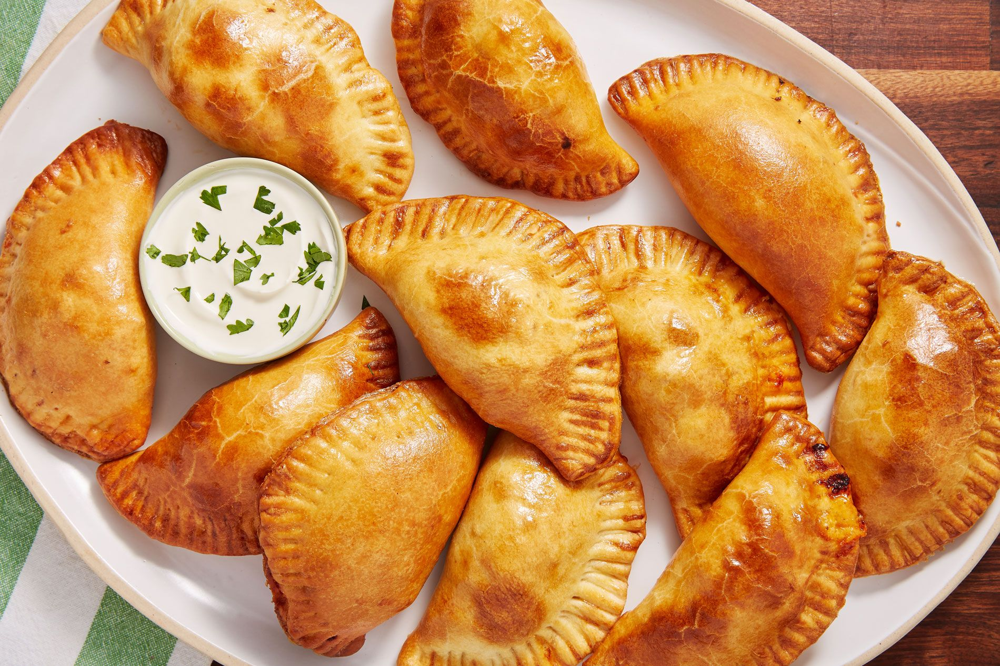

Here's how to make Empanadas!

Stuffed pastries are universal. Every culture has their own version, from Chinese dumplings to Polish pierogies to Indian samosas. I grew up eating empanadas, but by contrast, they weren’t traditional to a specific cuisine. While empanadas from Mexico are usually made with masa, my grandma—a woman who grew up in Culiacán, a city in northwestern Mexico—made hers with pot sticker wrappers! During the creation of this dish, we figured that if you’re searching for an empanada recipe, you’re probably not looking to fry them in pot sticker wrappers, so we developed an amazingly easy and flaky homemade dough. But we have modeled our filling after my grandma’s top-secret recipe. And if you REALLY want to go all-in on my grandma’s method, we’ve also included tips on how to use those pot-sticker wrappers. Read on for more tips for these Cheesy Beef Empanadas.
Ingredients:
- 1 tsp. kosher salt
- 1 tsp. baking powder
- 1/2 c. cold butter, cut into cubes
- 3/4 c. water
- 1 large egg
Directions
- In a large bowl, whisk together flour, salt, and baking powder. Cut butter into flour using your hands or a pastry cutter until pea-sized. Add water and egg and mix until a dough forms. Turn dough out on a lightly floured surface and knead until smooth, about 5 minutes.
- Wrap in plastic wrap and refrigerate for at least 1 hour.
- Preheat oven to 400° and line two large baking sheets with parchment paper.
- In a large skillet over medium heat, heat oil. Add onion and cook until soft, about 5 minutes, then add garlic and cook until fragrant, 1 minute more. Add ground beef and cook, breaking meat up with a wooden spoon, until no longer pink, 5 minutes. Drain fat.
- Return pan to medium heat, and stir tomato paste into beef. Add oregano, cumin, and paprika, and season with salt and pepper. Add tomatoes and jalapeños and cook until warmed through, about 3 minutes. Remove from heat and let cool slightly.
- Place dough on a lightly floured surface and divide in half. Roll one half out to ¼” thick. Using a 4.5” round cookie cutter, cut out rounds. Repeat with remaining dough. Reroll scraps once to cut out more rounds.
- Lightly moisten outer edge of a dough round with water and place about 2 tablespoons filling in center and top with cheddar and Monterey. Fold dough in half over filling. Use a fork to crimp edges together. Repeat with remaining filling and dough.
- Place empanadas on prepared baking sheets and brush with egg wash. Bake until golden and filling is warmed through, about 25 minutes.
- Garnish with cilantro and serve with sour cream.